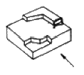
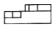
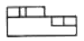
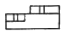
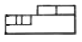
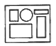
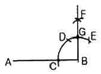
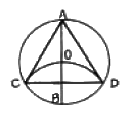
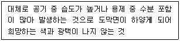
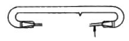

광고도장기능사 (2007-09-16 기출문제)
1과목: 공예디자인
1. 도면에서 치수 숫자와 같이 사용되는 기호의 사용 예(例) 중 옳은 것은?
- 도께 – t
- 45° 모따기 – B
- 반지름 - ø
- 지름 – R
(정답률: 알수없음)

2. 다음 중 가는일점쇄선을 사용하지 않는 선은?
- 중심선
- 기준선
- 해칭선
- 피치선
(정답률: 알수없음)
3. 투상도에 속하지 않는 것은?
- 전개도
- 정면도
- 평면도
- 측면도
(정답률: 알수없음)
4. 다음 중 심리적으로 또는 시각적으로 가장 안정감을 주는 색채는?
- 녹색
- 주황
- 흰색
- 빨강
(정답률: 알수없음)
5. 다음 그림을 화살표 방향에서 본 투상도는?





(정답률: 알수없음)
6. 다음 그림은 조형의 원리 중 무엇에 속하는가?

- 균형
- 균제
- 율동
- 대조
(정답률: 알수없음)
7. 다음 중 명도가 가장 낮은 색은?
- 청록
- 노랑
- 주황
- 남색
(정답률: 알수없음)
8. 길이를 재거나 또는 실제의 거리를 일정한 비율로 줄여 사용하는 자는?
- 운형자
- 삼각자
- 줄자
- 축척자
(정답률: 알수없음)
9. 노랑과 청록의 색료를 혼합한 결과는?
- 녹색
- 빨강
- 파랑
- 검정
(정답률: 알수없음)
10. 색상차가 큰 배색에서 따뜻한 느낌을 주는 색채와 차가운 느낌을 주는 색채 중 따뜻한 색채의 느낌으로 옳은 것은?
- 우울하다.
- 조용하다.
- 침착하다.
- 화려하다.
(정답률: 알수없음)
11. 색광혼합(가법혼색)의 3원색으로 옳은 것은?
- 빨강, 녹색, 파랑
- 주황, 파랑, 보라
- 자주, 노랑, 청록
- 빨강, 보라, 자주
(정답률: 알수없음)
12. 다음의 먼셀 표기 중 명도가 가장 낮은 것은?
- 5R 2/6
- 5R 4/6
- 5R 6/6
- 5R 8/6
(정답률: 알수없음)
13. 고명도 끼리 배색하면 느낌은?
- 어두움
- 가벼움
- 무거움
- 차가움
(정답률: 알수없음)
14. 다음 작도는 직선 AB의 한 끝 B에 수직선을 긋는 방법을 나타낸 것이다. 각 길이의 상관 관계 중 틀린 것은?

- CB = CD
- CD = DE
- DF = EF
- BG = FG
(정답률: 알수없음)
15. 아르누보(Art Nouveau)에 대한 설명으로 옳은 것은?
- 율동적 곡선과 화려한 색채에 의한 장식
- 장식이 없는 단순 튼튼한 양식
- 궁정생활의 화려한 정경을 표현
- 로마의 영웅적 위대함을 표현
(정답률: 알수없음)
16. 노랑색은 다음 어떤 색과 대비될 때 채도가 더욱 높아 보이는가?
- 녹색
- 주황
- 회색
- 파랑
(정답률: 알수없음)
17. 디자인의 요소 중 시각 요소에 해당하지 않는 것은?
- 질감
- 크기
- 색채
- 기능
(정답률: 알수없음)
18. 주어진 원에 내접하는 정3각형 작도에서 순서상 2번째로 하는 작도는?

- 지름 AB를 긋는다.
- C, D점을 구하고 연결한다.
- AC, CD, DA를 연결한다.
- BO를 반지름으로 하는 원호를 그린다.
(정답률: 알수없음)
19. 당나라 문화를 받아들여 동양의 그리이스 문화라는 말이 나올 정도로 비례와 균형이 아름답게 잘 조화 되었던 시대는?
- 고구려
- 백제
- 신라
- 고려
(정답률: 알수없음)
20. 민족의 정서나 미학이 깃들어 있는 대중 공예는?
- 민예
- 귀족공계
- 양산공예
- 인쇄공예
(정답률: 알수없음)
2과목: 광고도장재료
21. 다음 그림과 같은 대비로 옳은 것은?
- 형태의 대비
- 크기의 대비
- 질감의 대비
- 색채의 대비
(정답률: 알수없음)
22. 엄숙, 강직, 준엄한 느낌과 긴장감 등의 느낌을 주는 선은?
- 수평선
- 수직선
- 포물선
- 사선
(정답률: 알수없음)
23. 다음 중 네온사인의 특성 설명으로 틀린 것은?
- 야간에 선전효과가 매우 좋다.
- 도시 미관에 기여한다.
- 소재개발로 인한 부가가치가 높다.
- 화려하나 표준색은 3색이다.
(정답률: 알수없음)
24. 목재를 파쇄하여 충분히 건조시킨 후 합성수지 접착제로 열압 제판한 것으로 표면층은 견고·평활하나, 내부는 거친 목재의 가공품은?
- 코펜하겐 리브
- 코르크 보드
- 파티클 보드
- 플로닝 보드
(정답률: 알수없음)
25. 다음 중 판재(板材)의 규격에 해당하는 것은?
- 두께 3cm 미만, 폭은 두께의 2배 이상인 목재
- 두께 3cm 미만, 폭은 두께의 2배 이하인 목재
- 두께 6cm 미만, 폭은 두께의 3배 이상인 목재
- 두께 6cm 미만, 폭은 두께의 3배 이하인 목재
(정답률: 알수없음)
26. 형광도료의 특성에 대한 설명 중 틀린 것은?
- 빛을 비출 동안만 발광한다.
- 적색, 등색, 녹색 등이 있다.
- 일반적으로 내구성이 약하다.
- 자발광 도료로 방사성 물질이 함유되어 있다.
(정답률: 알수없음)
27. 다음 유리 원료 중 굴절률이 높은 광학 유리로서, 자외선을 잘 투과하는 유리의 주원료는?
- 나트륨 원료
- 인산 원료
- 산화아연 원료
- 칼륨 원료
(정답률: 알수없음)
28. 다음 중 비철금속 재료가 아닌 것은?
- 순철
- 구리
- 니켈
- 아연
(정답률: 알수없음)
29. 다음 중 메타크릴 수지에 대한 설명으로 틀린 것은?
- 투명도가 가장 뛰어나다.
- 안료에 의한 착색이 자유롭다.
- 플라스틱 제품 중 가장 오래된 역사를 가지고 있다.
- 채광판, 조명, 건축물의 내·외장재, 광고의 제작판 등의 용도로 쓰인다.
(정답률: 알수없음)
30. 목재의 나무결 무늬를 살려 도장하기 위한 도료로 적합한 것은?
- 에멀션페인트
- 유성페인트
- 클리어래커
- 에나멜페인트
(정답률: 알수없음)
31. 목재의 색깔은 무엇 때문에 생기는가?
- 목재 중에 포함된 휘발성분 때문
- 세포막과 세포 사이에 있는 수분 때문
- 세포막과 세포 속에 있는 세포질 때문
- 세포막과 세포 속에 포함되어 있는 유색 물질 때문
(정답률: 알수없음)
32. 종이의 한 면 또는 양면에 황산바륨 등의 광물질 층을 만들고 광택기로 처리한 것은?
- 아트지
- 황산지
- 모조지
- 켄트지
(정답률: 알수없음)
33. 조명의 종류 중 센서 라이팅(sensor lighting)의 장점과 거리가 먼 것은?
- 안정성
- 경제성
- 편리성
- 장식성
(정답률: 알수없음)
34. 다음 중 놋쇠라고도 하며, Cu와 Zn의 합금 및 이것에 다른 원소를 첨가한 합금은?
- 청동
- 켈멧
- 황동
- 알루미늄
(정답률: 알수없음)
35. 다음 중 연마재료에 속하지 않는 것은?
- 경석
- 숫돌
- 스틸 울
- 목판
(정답률: 알수없음)
36. 합판의 특성에 대한 설명으로 옳은 것은?
- 합판은 다른 판재에 비하여 균질이다.
- 방향에 따른 강도의 차가 크다.
- 팽창, 수축의 차가 크다.
- 폭이 큰 판을 얻기 어렵다.
(정답률: 알수없음)
37. 유성페인트와 비교 했을 때, 수성페인트의 일반적 성질에 관한 내용 중 잘못된 것은?
- 내수성이 부족하다.
- 내후성이 적다.
- 광택이 없다.
- 건조가 느리다.
(정답률: 알수없음)
38. 다음 합성수지 중 전기 절연성과 내후성이 우수하여 전기통신 기자재로 가장 많이 이용되고 있는 것은?
- 요소수지
- 페놀수지
- 폴레이스테르 수지
- 염화비닐 수지
(정답률: 알수없음)
39. 다음 중 ERP란?
- 유리섬유 강화 플라스틱
- 탄소섬유 강화 플라스틱
- 페놀섬유 강화 플라스틱
- 에폭시섬유 강화 플라스틱
(정답률: 알수없음)
40. 다음 중 목재 변색의 가장 큰 원인이 되는 광선은?
- 자외선
- 적외선
- 가시 광선
- 열선
(정답률: 알수없음)
3과목: 광고도장
41. 효과적인 옥외광고의 고려사항이 아닌 것은?
- 건축물이나 구조물을 연구한다.
- 위치, 교통량, 고객의 명단을 파악한다.
- 입지조건을 검토한다.
- 관계법규를 이해한다.
(정답률: 알수없음)
42. 다음 중 실물보다 확대하여 도면을 작성할 때 사용되는 척도는?
- 축척
- 배척
- 실척
- 현척
(정답률: 알수없음)
43. 스프레이(spray) 도장 시 사용되는 기계 또는 공구가 아닌 것은?
- 공기 압축기
- 페인트 탱크
- 스프레이 건
- 직류 고압 발생기
(정답률: 알수없음)
44. 다음 중 간접조명의 장점은?
- 설비비가 저렴하다.
- 강한 빛을 얻을 수 있다.
- 은은한 분위기를 만든다.
- 빛의 대비가 확실하다.
(정답률: 알수없음)
45. 제품이나 기업 이름의 글자를 고유한 개성을 갖도록 표현한 것은?
- 모노타입(Monotype)
- 로고타입(Logotype)
- 바디타입(Bodytype)
- 포인트(Point)
(정답률: 알수없음)
46. 다음 중 안전도 검사를 받아야 할 광고물이 아닌 것은?
- 옥상 간판
- 건물 2층 이상에 설치하는 가로형 간판
- 지면으로부터 높이가 4m 이상인 지주 이용 간판
- 광고물 상단의 높이가 지면으로부터 5m 이상 이고, 1면의 면적이 1m2 이상인 돌출 간판
(정답률: 알수없음)
47. 목제품 도장면 작업시 사포질의 방향으로 알맞은 것은?
- 나뭇결 방향
- 나뭇결 45° 방향
- 나뭇결 90° 방향
- 상관없다.
(정답률: 알수없음)
48. 스프레이 칠의 장점이 아닌 것은?
- 도면이 평활하다.
- 도료 손실이 거의 없다.
- 도료를 미립화시켜 도장 한다.
- 붓에 비하여 능률적이다.
(정답률: 알수없음)
49. 가로형 간판의 표시방법에서 '돌출폭'은 벽면으로부터 몇 cm 이내이어야 하는가?
- 10cm 이내
- 30cm 이내
- 50cm 이내
- 60cm 이내
(정답률: 알수없음)
50. 다음 중 도장 작업 후 도장면에 균열이 생기는 원인이 아닌 것은?
- 한 번에 칠을 두껍게 했을 때
- 도로에 건조제를 많이 넣었을 때
- 직사일광 아래에서 도장을 할 때
- 밑칠의 건조가 불량할 때
(정답률: 알수없음)
51. 다음 설명과 같은 도장 결함은?

- 기포
- 백화
- 번짐
- 핀홀
(정답률: 알수없음)
52. 뿜칠 도장시 공기 압축기의 공기 압력은 어느 정도 유지하는 것이 좋은가?
- 1.45 kg/cm2
- 2.65 kg/cm2
- 3.50 kg/cm2
- 6.54 kg/cm2
(정답률: 알수없음)
53. 작업 안전 교육 방법에 대한 내용 중 틀린 것은?
- 상대방의 말을 잘 들어 본 다음 잘못된 점을 고쳐 나간다.
- 상대방의 결함은 무조건 인정하도록 한다.
- 스스로 모범을 보인다.
- 작업 태도에 대한 평가를 반드시 실시한다.
(정답률: 알수없음)
54. 다음 네온관의 구조도 중 화살표가 지시하는 부위의 명칭은?

- 전극
- 리드선
- 팁
- 발광부분
(정답률: 알수없음)
55. 색료 혼합의 3원색을 모두 혼합하여 실크 인쇄를 할 때 나타나는 색으로 가장 근접한 것은?
- 주황
- 검정
- 녹색
- 빨강
(정답률: 알수없음)
56. 다음 중 공공시설에 대한 설명으로 옳은 것은?
- 주변과 관계없이 본인의 주관대로 시설한다.
- 공공시설은 호화롭고 화려하게 꾸며야 한다.
- 공공시설은 주변과 조화있게 설치하고, 주민이 사용하기 편리해야 한다.
- 공공시설은 환경과 관계없이 미려하게 디자인되어야 한다.
(정답률: 알수없음)
57. 방청 페인트의 사용 목적은?
- 칠 표면의 색상을 돋보이게 하기 위한 바닥칠
- 칠의 두께를 보충하기 위하여 칠하는 페인트
- 칠의 흡수를 잘하게 하기 위하여 칠하는 페인트
- 녹을 방지하기 위하여 칠하는 페인트
(정답률: 알수없음)
58. 인간의 불안전한 행동 중 생리적 요인에 속하는 것은?
- 억측 판단
- 무의식 행동
- 수면 부족
- 정서 불안정
(정답률: 알수없음)
59. 광고의 대중매체 가운데 전파매체에 해당되는 것은?
- 신문
- TV
- 잡지
- 옥외광고
(정답률: 알수없음)
60. 애드벌룬의 표시방법이 잘못된 것은?
- 수소 등 발화성 기체를 사용해서는 안된다.
- 공중 통행에 방해가 되어서는 안된다.
- 상업지역 이외에는 표시할 수 없다.
- 공중에 띄우는 애드벌룬 간에는 1킬로미터 이상 수평거리를 유지하여야 한다.
(정답률: 알수없음)
도께는 물체의 두께를 나타내는 치수이며, 일반적으로 t로 표기합니다. 따라서 "도께 – t"가 옳은 기호 사용 예입니다.
45° 모따기 – B는 모따기를 나타내는 기호 중 하나이며, B는 모따기의 종류를 나타냅니다.
반지름 - ø는 원의 반지름을 나타내는 기호이며, ø는 대문자 O와 유사하지만 다른 기호입니다.
지름 – R은 원의 지름을 나타내는 기호이며, R은 대문자 R로 표기합니다.